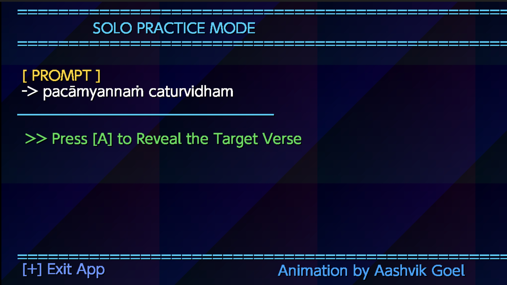

अनुक्रम
Anukrama
Practice and memorize the Bhagavad Gita one verse at a time on your Nintendo Switch.

Motives
This started as a project for myself. While practicing Bhagavad Gita verses, I realized there wasn't an easy way to quiz myself without someone else helping. I thought my Nintendo Switch would actually make a fun platform for it, so I built Anukrama. Hopefully it helps other people memorize verses as much as it helps me.
How It Works
Choose a verse
Pick the verse you want to practice.
Read the prompt
The previous quarter of the verse is shown on screen.
Chant
Recite the next quarter from memory.
Move to the next verse!
Press A to move to the next prompt!
Gameplay
See how Anukrama is used!
Features
Guided Verse Practice
Practice one verse at a time!
Sanskrit Audio
Listen and perfect pronunciation thanks to Chinmaya Mission's audio recordings.
English Transliteration
Easy-to-read english transliteration included!
Local VS Mode
Challenge a friend! (on the same Switch).
Includes important verses
Includes all 20 verses of Chapter 15!
Nintendo Switch Homebrew
Built natively using C and libnx.
Open Source
Contribute on our GitHub!
Fast Loading
The game is very light-weight and launches instantly.
Roadmap
Download Latest Release
Download the newest build of Anukrama for your Nintendo Switch or Emulator.
Download Latest Release